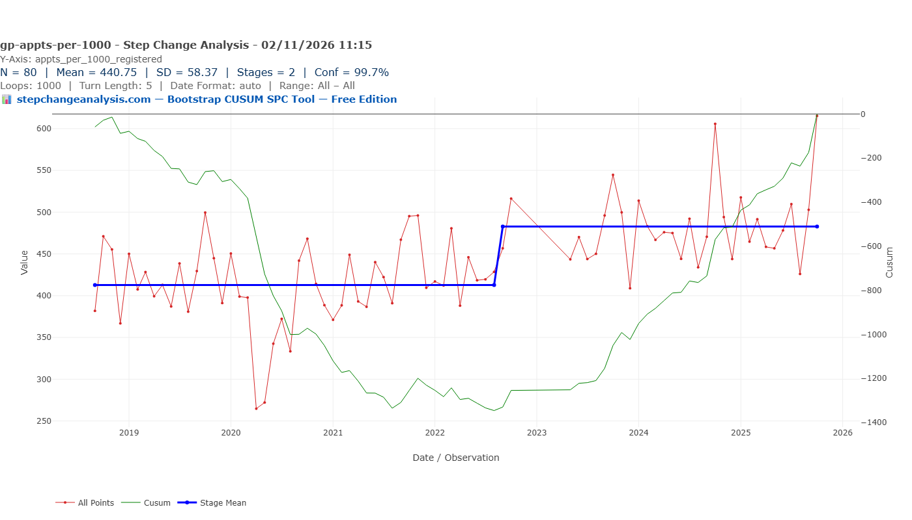
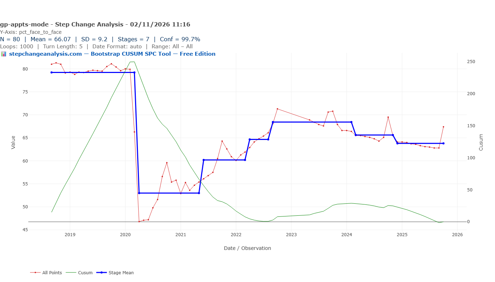
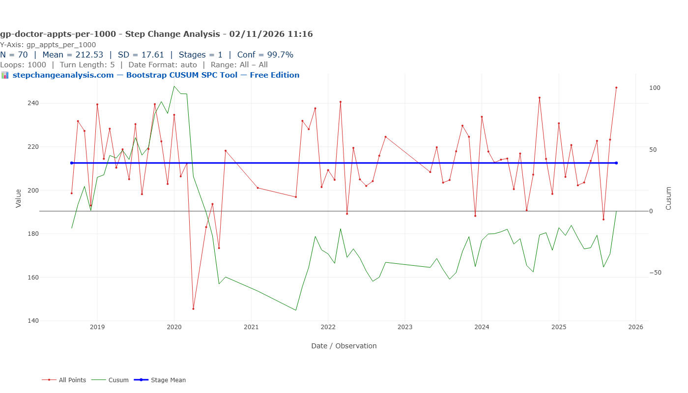
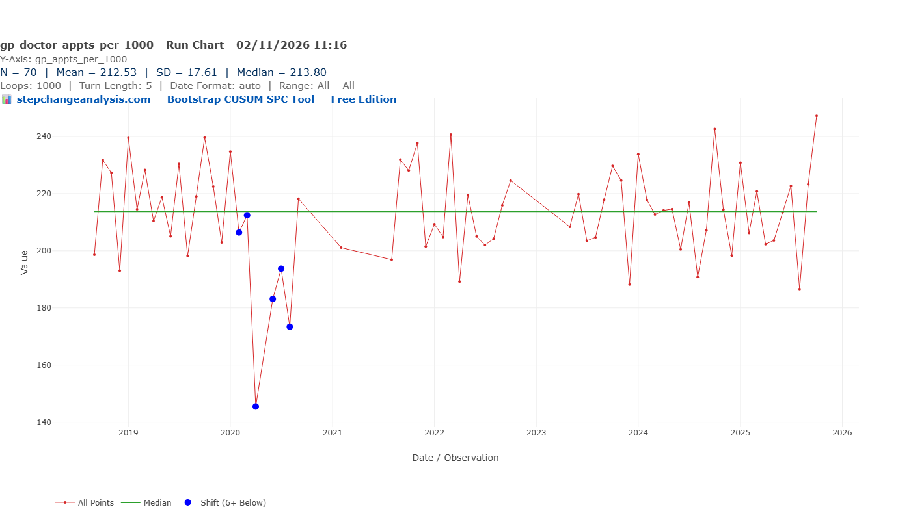

More GP Appointments, But Better Access?
Why more recorded appointments do not, on their own, tell us whether people can get the care they need.
Recorded appointment activity increased in the historical data, yet many patients reported difficulty making an appointment. These are different measures, for different periods. Together they raise a question: are we measuring activity, or access to appropriate care?
The page in one view
Different evidence answers different questions.
- National activityMore appointments recorded
Activity per person rose; the face-to-face share remained below its pre-COVID level in the historical data.
- Patient accessMore is not the whole answer
Survey respondents also reported difficulty making appointments. Activity does not measure all unmet need.
- Local learningStudy the work, then test
Stowhealth offers ideas; use the Three Rights to investigate, act and measure locally.
What the national picture shows
In the site’s historical NHS England series, recorded appointments per 1,000 registered patients were 471 in October 2018 and 615 in October 2025—about 31% higher in that same-month comparison. These are individual months, not annual averages; recording and coverage changed too. They cannot establish how much of the increase reflects additional comparable care. See data notes.

The StepChange analysis fitted two stages, with average monthly rates of approximately 413 and 483 per 1,000, and a candidate boundary around late summer 2022. That suggests a higher recorded level in the later period; it does not tell us why or how much reflects changed recording. Recorded total appointments also fell sharply at the start of the pandemic—from 397.7 per 1,000 in March 2020 to 264.8 in April—before recovering. The two-stage fit does not give that temporary fall a separate stage.
The separate GP Patient Survey reported that, among respondents who needed an appointment, 11.1% in 2021 and 27.9% in 2023 said they had avoided making one in the previous 12 months because they found it too difficult. This is a survey of registered adults, not a count of all unmet need; it covers different people and periods from the 2025 appointment figures.
Both can be true: more activity can be recorded while people still struggle to get suitable care. Neither series tells us by itself what caused the difficulty.
Did COVID change how appointments were delivered?
Yes—the timing and the independent context strongly support a connection for the sharp early-2020 change. In this series the face-to-face share fell from 79.9% in February 2020 to 46.8% in April, while the telephone share rose from 13.8% to 47.9%.
During March 2020, NHS England advised practices to triage requests and provide as much care as possible remotely to reduce infection risk; England entered lockdown on 23 March. The Health Foundation’s contemporary account describes those changes. The timing and documented response make COVID a strong explanation for the initial shift, though this national chart cannot separate each contributing factor.

The analysis fits seven stages to the face-to-face share: the sharp fall is followed by a partial recovery and later changes. The steps are fitted summaries of the observations; some may approximate gradual change. They do not establish that every boundary was abrupt, or that COVID caused every later change.
Face-to-face appointments had not returned to their pre-COVID share by October 2025. They accounted for 79.9% of recorded appointments in February 2020 and 67.4% in October 2025—12.5 percentage points lower, more than five years later. None of the recorded monthly observations after February 2020 reached that pre-COVID figure, although the series has a six-month gap. This is a change in the mix of appointments, not proof by itself that care was better or worse.
In October 2025, 67.4% of recorded appointments were face-to-face and 40.2% were with a GP. These describe different characteristics and are not mutually exclusive. A suitable appointment with a nurse, pharmacist or other professional may be the right care; the question is whether the right skills are available, including a GP when needed.
What about appointments with a GP?
The StepChange analysis fitted one stage to the recorded GP-doctor rate, with an overall mean of 212.53 appointments per 1,000 registered patients per observed month. That means this run did not identify a sustained step under its settings—not that the rate or access never changed.

The run chart tells us something the single fitted mean does not: there were notably low observations around the start of the pandemic. For example, the recorded GP-doctor rate was 145.5 per 1,000 in April 2020; the surrounding series has gaps. This is consistent with pandemic disruption, but the chart alone cannot establish how much was due to reduced demand, service arrangements or recording.

Recorded appointments are not unique patients, all clinical contacts or all work outside appointment systems. A patient may have several appointments; another may be unable to book one. Even a consistent appointment rate would not establish that everyone who needed a GP could see one.
Were the later changes caused by COVID?
Some later changes may reflect recovery and changes in how practices worked after the initial shock. But the charts cannot establish that COVID caused the fitted boundary in total appointments around 2022, or each later change in consultation mode. Service design, staffing, demand and recording are plausible influences to investigate—not conclusions from these charts alone.
The national series includes PCN appointment systems from June 2023, and other reporting practices changed. The six-month gap from November 2022 to April 2023 also limits what can be said about the intervening period. Check release definitions and local evidence before attributing a change.
From activity to the problem patients experience
A useful problem statement is not simply “there are too few appointments”. Ask instead: Can people obtain appropriate care when they need it, with continuity where it matters? Waiting, repeat contacts, safety, ease of access and staff workload all help answer that question. More appointments can be part of a solution, but are not the same thing as a solution.
National averages can reveal a pattern but cannot diagnose every practice. Demand, capacity, local arrangements and recording may differ. Nor can these data show where each person who did not obtain an appointment went, or whether any one national policy caused the patterns.
What Stowhealth adds to the national picture
Stowhealth’s GP access Bright Spot shows what can be learned by examining the work locally. The 2017 NHS case study describes how the practice measured demand, put more doctors on Mondays when demand was higher, changed the route to clinical advice and strengthened nursing capacity.
Among people with a preferred GP, the proportion who usually saw or spoke to that GP was reported as rising from 47% in 2014 to 72% in 2016; staff experience also reportedly improved. These are historical case-study findings, not a controlled evaluation or a like-for-like comparison with the national figures. The case does not prove which change caused the reported results or that the same model will work everywhere.
The transferable question: what creates delays and poor continuity locally, and how could the work and capacity be organised differently? Study the method—not just the software or the headline result.
Use the Three Rights to act and learn
- Right Problem: Understand who cannot get appropriate care, when and why. Check local demand, queues, continuity and staff capacity before choosing a solution.
- Right Intervention: Test a change that addresses the local difficulty. Stowhealth’s demand-matched rota and care pathways are ideas to investigate, not a prescription to copy unchanged.
- Right Measures: Track time from request to appropriate care and patient experience alongside implementation, repeat contacts, continuity, safety and staff workload. Include people who could not complete a request, where possible.
Agree definitions and a baseline, record what changed and when, and keep reviewing with patients and staff. A run chart can help show patterns over time; a fitted change does not by itself establish its cause. See outcome, process and balancing measures and choosing a chart.
Explore the complete framework in Why Improvement Programmes Fail.
Data, sources and limitations
- NHS England: Appointments in General Practice; October 2025 release. Recorded activity is not all general-practice workload and does not measure complexity. National reporting includes PCN appointment systems from June 2023; October 2025 publication removed estimates for missing practices. Reporting and classification changes affect comparison over time.
- GP Patient Survey 2023 national report, question on avoiding an appointment: weighted survey results among respondents who needed one. Survey results and recorded appointment counts have different definitions and periods.
- NHS England: Stowhealth case study, published 2017. A reported local example, not an estimate of national impact.
- The Health Foundation: GP service delivery during COVID-19 (July 2020), for the contemporaneous move to remote consultation and its context.
The site’s historical files combine three NHS releases. The total appointment series has 80 monthly observations from September 2018 to October 2025, with November 2022–April 2023 missing; the GP-delivered rate has 70 observations and additional gaps. Earlier and later releases use different professional classifications. Similar values at a join do not establish full comparability. Neither series is a continuous seven-year record.
Historical data downloads: total appointments per 1,000 · GP-delivered appointments per 1,000 · appointment mode and GP share · survey extract. These are the original compiled files, not an updated dataset; check definitions, gaps and source releases before reuse.
Analysis details: charts were produced using the StepChange analyser on 2 November 2026. Each uses 1,000 loops, Turn Length 5 and a 99.7% confidence setting; total and mode series have 80 observations, and the GP-doctor series has 70. The setting is not the probability that a particular cause produced a change. The screenshots connect available observations across missing dates; they do not fill in missing measurements. Seasonality, gaps and recording changes matter when interpreting fitted stages.